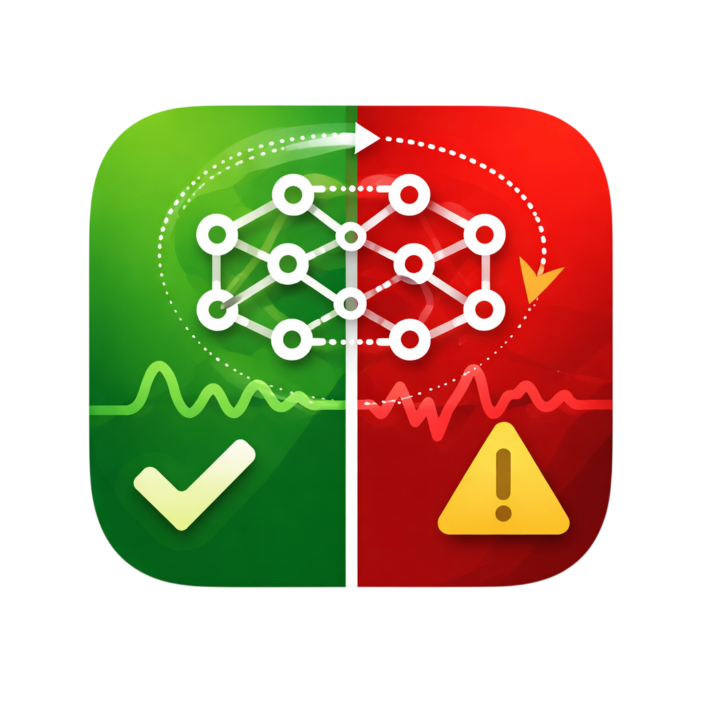

2023
Mobile botnet detection: a comprehensive survey
International Journal of Information Security, 22, 137–175
Doctoral Student · University of Geneva
I'm a doctoral researcher in Information Systems at the University of Geneva (UNIGE). Previously, I was a machine learning research intern2 at Nokia Bell Labs, across its Belgium and France offices. I received my MSc in Telecommunications Engineering from Politecnico di Milano.
My research interests lie at the intersection of machine learning and cybersecurity, with a focus on privacy-preserving machine learning, and federated learning. Recently, I have also started exploring federated foundation models, their security, and optimization.

For the most up-to-date list, see my Google Scholar profile.
International Journal of Information Security, 22, 137–175

28th Iranian Conference on Electrical Engineering (ICEE)
7th Iranian Joint Congress on Fuzzy and Intelligent Systems (CFIS)
 UNIGE
UNIGEAdvisor: Name · Topic: privacy-preserving and federated learning.
 PoliMi
PoliMiThesis: Thesis title.
UNIGEResearch on privacy-preserving machine learning, federated learning and federated foundation models.
 Bell Labs
Bell LabsTeam / project: one-line description of what you worked on.